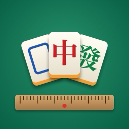

符のものさし
麻雀の点数を、符の理由まで1行ずつ
麻雀で上がった手を牌のボタンで並べ、ロンかツモか・風・リーチ・ドラを選ぶと、役・翻・符・点数を出す iPhone のアプリです。符がなぜその数になったのかを1行ずつ見せ、行を押すと、その符を作った牌が光ります。
- 手の分け方や待ちの取り方が何通りかあるときは、全部を試して、いちばん高いものを使います。ほかの分け方も見られます
- 喰いタン・切り上げ満貫・ダブル役満・数え役満・連風牌の雀頭の符を、遊ぶ場の決まりに合わせて変えられます
- 翻と符から点数を引く早見表つき
- 計算した手を20件まで残せます（この iPhone の中だけ）
- 無料。アプリ内での購入はありません。登録もいりません
このアプリは点数を計算するための道具です。お金や物を賭けることには使わないでください。